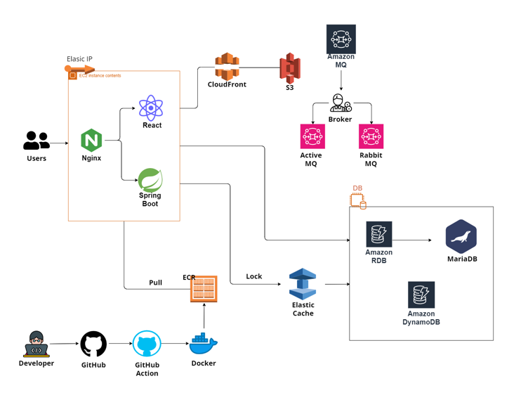
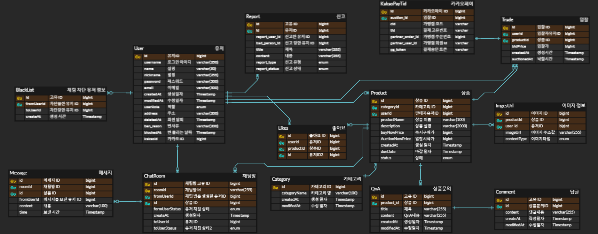

개발 환경
- Version: Java 17
- IDE: IntelliJ
- Framework: SpringBoot 3.3.0
- ORM: JPA
기술 스택
- Computing: AWS EC2, Docker
- Container & Image: ECR
- Frontend: React
- Database: AWS RDS (MariaDB)
- Cache: ElastiCache (Redis)
- Content Delivery: CloudFront
- Storage: AWS S3
전체 아키텍처

CI/CD, 캐시 계층, 메시징 큐, 정적 자산 전송 등 실무형 요소들을 직접 도입하여 실제 서비스 수준의 안정성과 확장성을 갖춘 구조로 설계하였습니다.
ERD 설계

상품, 경매, 입찰, 회원, 채팅 등 각 기능의 관계를 명확히 정의한 ERD입니다. 정규화와 성능을 동시에 고려하여, 조회 효율성과 확장성을 확보하였습니다.
기술 선택 이유 및 주요 구현
Redis 분산 락 – Redisson
- 입찰 시 동시에 여러 사용자가 접근하므로, 공정성과 정확성을 위해 Redisson의 FairLock 기능 사용
- AOP + Annotation으로 재사용성 높은 코드 구성
RabbitMQ vs Kafka
- TTL과 DLX 기능을 지원하는 RabbitMQ가 지연 메시지 처리에 적합
- Kafka는 대용량 스트리밍에는 강점이 있으나, 이 프로젝트는 즉시성과 간결한 설정이 우선
- 따라서 TTL + DLX로 경매 마감 시점 처리에 RabbitMQ를 사용
ActiveMQ – 실시간 채팅
- 웹소켓 기반 채팅을 위해 ActiveMQ의 Topic 모델 사용
- React + Spring + ActiveMQ의 연동을 통해 빠른 메시지 전파와 확장성 확보
@Cacheable + QueryDSL
- 읽기 요청이 잦은 데이터는 캐시로 대응하여 DB 부하를 낮춤
- 복잡한 조건 검색을 위해 QueryDSL을 적용 → 코드 가독성과 유지보수 향상
카카오 소셜 로그인
- 사용자 진입 장벽을 낮추기 위해 소셜 로그인 적용
- JWT와 리프레시 토큰을 통해 인증 유지 및 자동 재발급 처리